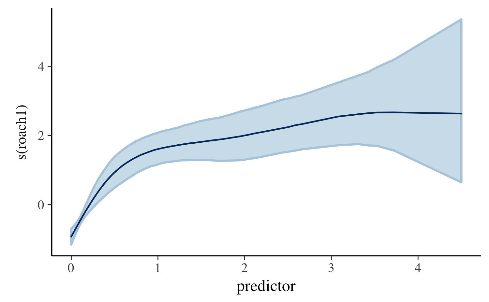

This vignette explains how to use the stan_lmer and stan_glmer functions in the rstanarm package to estimate linear and generalized linear models with intercepts and slopes that may vary across groups. Before continuing, we recommend reading the vignettes for the stan_glm function. The Hierarchical Partial Pooling vignette also has examples of both stan_glm and stan_glmer.
NOTE: a more thorough vignette for stan_lmer and stan_glmer with detailed examples is forthcoming.
Models with this structure are refered to by many names: multilevel models, (generalized) linear mixed (effects) models (GLMM), hierarchical (generalized) linear models, etc. The terminology for the model parameters is equally diverse. In this vignette we avoid using the common names fixed effects and random effects, which are not only misleading but also defined differently across the various fields in which these models are applied. We instead favor the more accurate (albeit more verbose) intercepts/coefficients that are common across groups and intercepts/coefficients that vary by group.
One of the many challenges of fitting models to data comprising multiple groupings is confronting the tradeoff between bias and variance. An analysis that disregards between-group heterogeneity can yield parameter estimates with low variance but high bias. Group-by-group analyses, on the other hand, can reduce bias at the expense of high-variance estimates. While complete pooling or no pooling of data across groups is sometimes called for, models that ignore the grouping structures in the data tend to underfit or overfit (Gelman et al., 2013). Multilevel modeling provides a compromise by allowing parameters to vary by group at lower levels of the hierarchy while estimating population-level parameters at higher levels. Inference for each group-level parameter is informed not only by the group-specific information contained in the data but also by the data for other groups as well. This is commonly referred to as borrowing strength or shrinkage.
In rstanarm, these models can be estimated using the stan_lmer and stan_glmer functions, which are similar in syntax to the lmer and glmer functions in the lme4 package. However, rather than performing (restricted) maximum likelihood (RE)ML estimation, Bayesian estimation is performed via MCMC. The Bayesian model adds independent prior distributions on the regression coefficients (in the same way as stan_glm) as well as priors on the terms of a decomposition of the covariance matrices of the group-specific parameters. These priors are discussed in greater detail below.
In this section we dicuss a flexible family of prior distributions for the unknown covariance matrices of the group-specific coefficients.
For each group, we assume the vector of varying slopes and intercepts is a zero-mean random vector following a multivariate Gaussian distribution with an unknown covariance matrix to be estimated from the data. Unfortunately, expressing prior information about a covariance matrix is not intuitive and can also be computationally challenging. It is often both much more intuitive and efficient to work instead with the correlation matrix.
For this reason, rstanarm decomposes covariance matrices into correlation matrices and variances. The variances are in turn decomposed into the product of a simplex vector (probability vector) and the trace of the covariance matrix. Finally, the trace is set to the product of the order of the matrix and the square of a scale parameter. This prior on a covariance matrix is represented by the decov function.
Using the decomposition described above we can work directly with correlation matrices rather than covariance matrices. The prior used for a correlation matrix \(\Omega\) is called the LKJ distribution and has a probability density proportional to the determinant of the correlation matrix raised to the power of a positive regularization parameter \(\zeta\) minus one:
\[ f(\Omega | \zeta) \propto \text{det}(\Omega)^{\zeta - 1}, \quad \zeta > 0. \]
The shape of this prior depends on the value of the regularization parameter in the following way:
The \(J \times J\) covariance matrix \(\Sigma\) of a random vector \(\boldsymbol{\theta} = (\theta_1, \dots, \theta_J)\) has diagonal entries \({\Sigma}_{jj} = \sigma^2_j = \text{var}(\theta_j)\). Therefore, the trace of the covariance matrix is equal to the sum of the variances. We set the trace equal to the product of the order of the covariance matrix and the square of a positive scale parameter \(\tau\):
\[\text{tr}(\Sigma) = \sum_{j=1}^{J} \sigma^2_j = J\tau^2.\]
The vector of variances \(\boldsymbol{\sigma}^2 = (\sigma^2_1, \dots \sigma^2_J)\) is set equal to the product of a simplex vector \(\boldsymbol{\pi}\) — which is non-negative and sums to 1 — and the scalar trace: \(\boldsymbol{\sigma}^2 = J \tau^2 \boldsymbol{\pi}\). Each element \(\pi_j\) of \(\boldsymbol{\pi}\) then represents the proportion of the trace (total variance) attributable to the corresponding variable \(\theta_j\).
For the simplex vector \(\boldsymbol{\pi}\) we use a symmetric Dirichlet prior, which has a single concentration parameter \(\alpha > 0\):
If all the elements of \(\boldsymbol{\theta}\) were multiplied by the same number \(k\), the trace of their covariance matrix would increase by a factor of \(k^2\). For this reason, it is sensible to use a scale-invariant prior for \(\tau\). We choose a Gamma distribution, with shape and scale parameters both set to \(1\) by default, implying a unit-exponential distribution. Users can set the shape hyperparameter to some value greater than one to ensure that the posterior trace is not zero.
There are several advantages to estimating these models using rstanarm rather than the lme4 package. There are also a few drawbacks. In this section we briefly discuss what we find to be the two most important advantages as well as an important disadvantage.
While lme4 uses (restricted) maximum likelihood (RE)ML estimation, rstanarm enables full Bayesian inference via MCMC to be performed. It is well known that (RE)ML tends to underestimate uncertainties because it relies on point estimates of hyperparameters. Full Bayes, on the other hand, propogates the uncertainty in the hyperparameters throughout all levels of the model and provides more appropriate estimates of uncertainty for models that consist of a mix of common and group-specific parameters.
The stan_glmer and stan_lmer functions allow the user to specify prior distributions over the regression coefficients as well as any unknown covariance matrices. There are various reasons to specify priors, from helping to stabilize computation to incorporating important information into an analysis that does not enter through the data.
The benefits of full Bayesian inference (via MCMC) come with a cost. Fitting models with (RE)ML will tend to be much faster than fitting a similar model using MCMC. Speed comparable to lme4 can be obtained with rstanarm using approximate Bayesian inference via the mean-field and full-rank variational algorithms (see help("rstanarm-package", "rstanarm") for details). These algorithms can be useful to narrow the set of candidate models in large problems, but MCMC should always be used for final statistical inference.
The rstanarm package includes a stan_gamm4 function that is similar to the gamm4 function in the gamm4 package, which is in turn similar to the gamm function in the mgcv package. The substring gamm stands for Generalized Additive Mixed Models, which differ from Generalized Additive Models (GAMs) due to the presence of group-specific terms that can be specified with the syntax of lme4. Both GAMs and GAMMs include nonlinear functions of (non-categorical) predictors called “smooths”. In the example below, so-called “thin-plate splines” are used to model counts of roaches where we might fear that the number of roaches in the current period is an exponentially increasing function of the number of roaches in the previous period. Unlike stan_glmer, in stan_gamm4 it is necessary to specify group-specific terms as a one-sided formula that is passed to the random argument as in the lme function in the nlme package.
library(rstanarm)
data(roaches)
roaches$roach1 <- roaches$roach1 / 100
post <- stan_gamm4(y ~ s(roach1) + treatment + log(roaches$exposure2),
random = ~(1 | senior),
data = roaches, family = neg_binomial_2, QR = TRUE,
chains = CHAINS, cores = CORES, seed = SEED)plot_nonlinear(post)
Here we see that the relationship between past and present roaches is estimated to be nonlinear. For a small number of past roaches, the function is steep and then it appears to flatten out, although we become highly uncertain about the function in the rare cases where the number of past roaches is large.